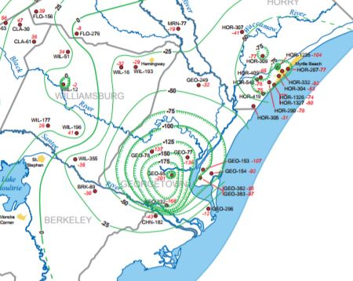

Potentiometric Mapping
The potentiometric surface of an aquifer is defined by the elevations at which water stands in tightly cased wells completed in the aquifer. Over the past 20 years, the Hydrology Section, in collaboration with the U.S. Geological Survey, SCDHEC, and the Savannah River Site, has prepared numerous potentiometric maps of the major Coastal Plain aquifers (Floridan, Black Creek, and Middendorf) in order to assess changes in groundwater storage and to determine regional ground-water flow directions and hydraulic gradients.
Water-level data used to construct these maps are collected from about 600 wells across the Coastal Plain, including numerous monitoring wells and a variety of public-supply, industrial, and agricultural wells. Water levels are typically measured in November/December about once every five years. A new 3-year rotating schedule went into effect in 2011, in which one of the three aquifers will be measured each year and every three years thereafter.
Download Potentiometric Maps
Reports are listed below in chronological order and/or available for download in PDF format.
A GIS database with all pot map contours, well locations and levels, and gridded surfaces is also available for download. Please read GIS metadata before using the GIS data.
Potentiometric Surface of the Black Creek (Crouch Branch) Aquifer in South Carolina, November 2015
Andrew Wachob and Brooke Czwartacki
SCDNR Water Resources Report 59
Potentiometric Surface of the Middendorf Aquifer in South Carolina, November 2014
Andrew Wachob
SCDNR Water Resources Report 58
Potentiometric Surface of the Floridan and Tertiary Sand Aquifers in South Carolina, November 2013
Andrew Wachob, Brenda L. Hockensmith, Katie Luciano, and C. Scott Howard
SCDNR Water Resources Report 56
Potentiometric Surface of the Black Creek Aquifer in South Carolina, November 2012
Brenda L. Hockensmith, Andrew Wachob, C. Scott Howard, and Erin Koch
SCDNR Water Resources Report 55
Potentiometric Surface of the Middendorf Aquifer in South Carolina, November 2011
Brenda L. Hockensmith, Andrew Wachob, C. Scott Howard, and Erin Koch
SCDNR Water Resources Report 54
Potentiometric Surface of the Floridan and Tertiary Sand Aquifers in South Carolina, November 2010
Brenda L. Hockensmith, Andrew Wachob, C. Scott Howard, and Erin Koch
SCDNR Water Resources Report 53
Potentiometric Surface of the Black Creek Aquifer in South Carolina, November 2009
Brenda L. Hockensmith, 2012
SCDNR Water Resources Report 52
Potentiometric Surface of the Middendorf Aquifer in South Carolina, November 2009
Brenda L. Hockensmith, 2012
SCDNR Water Resources Report 51
Potentiometric Surface of the Floridan Aquifer and Tertiary Sand Aquifer in South Carolina, November 2004
Brenda L. Hockensmith, 2009
SCDNR Water Resources Report 48
Potentiometric Surface of the Black Creek Aquifer in South Carolina, November 2004
Brenda L. Hockensmith, 2008
SCDNR Water Resources Report 47
Potentiometric Surface of the Middendorf Aquifer in South Carolina, November 2004
Brenda L. Hockensmith, 2008
SCDNR Water Resources Report 46